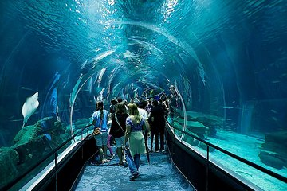

Nossos Passeios



Entenda o que é transfer, como funciona este serviço e quais as vantagens de contratá-lo:
Transfer é uma das forma mais seguras de você realizar o traslado do aeroporto até o resort e do resort para o aeroporto.
Sou + Rio é uma empresa credenciadas pelo Ministério do Turismo, prestamos este serviço buscando o passageiro no horário combinado.
O serviço de transfer é dividido em três categorias principais: in, out e in/out.
O que é transfer in, out e in/out?
- Transfer in: é responsável por realizar o trajeto do aeroporto até o resort/hotel;
- Transfer out: é responsável por realizar o trajeto do resort até o aeroporto/hotel;
- Transfer in/out: é responsável por realizar o trajeto do aeroporto até o resort e do resort até o aeroporto, ou seja, ida e volta.
Este espaço fica dentro do prório Hotel, interligado ao restaurante e com fácil acesso através dos elevadores. Uma excelente área para a realização do seu evento, com capacidade máxima para 200 pessoas.
Aqui você encontra a estrutura completa para realizar seu evento. Garanta conforto, segurança, tecnologia, ótima gastronomia e profissionais capacitados para atingir seus objetivos.